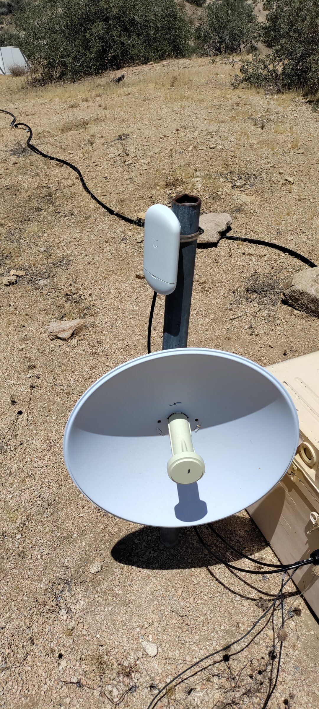
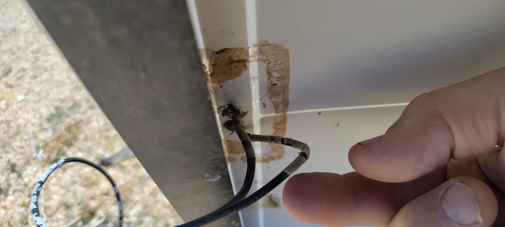
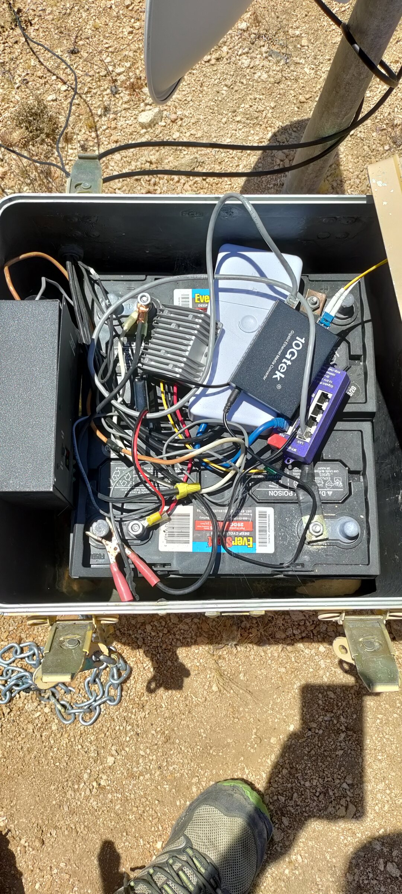
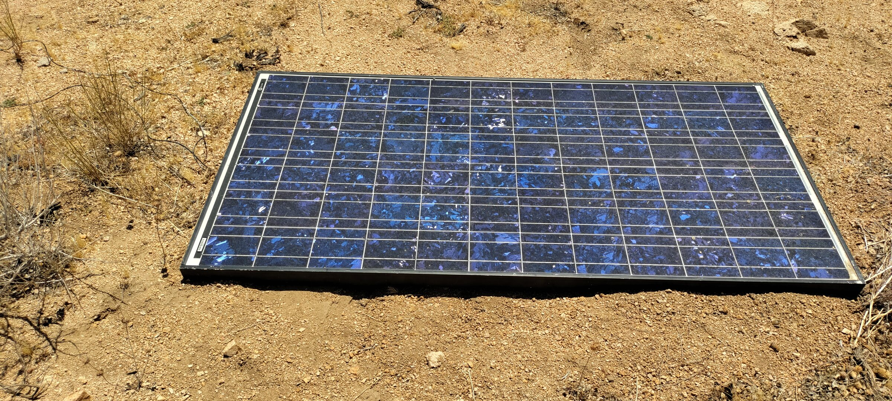
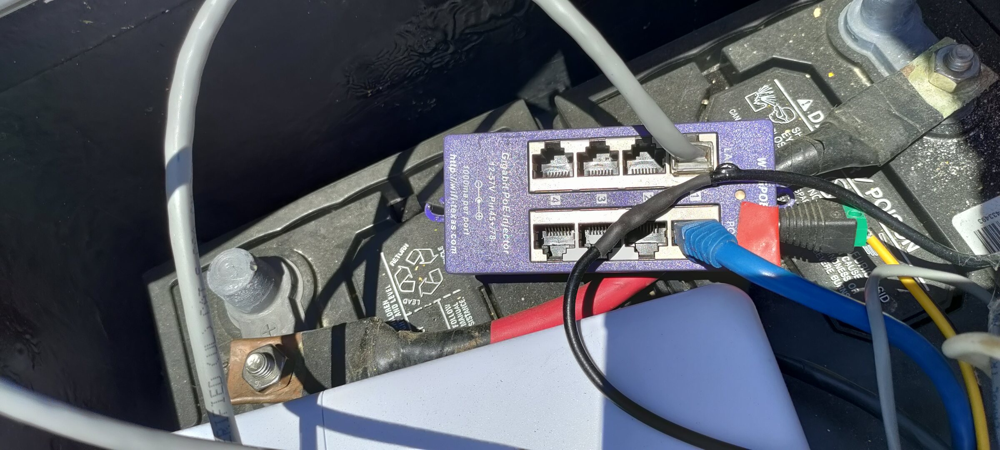
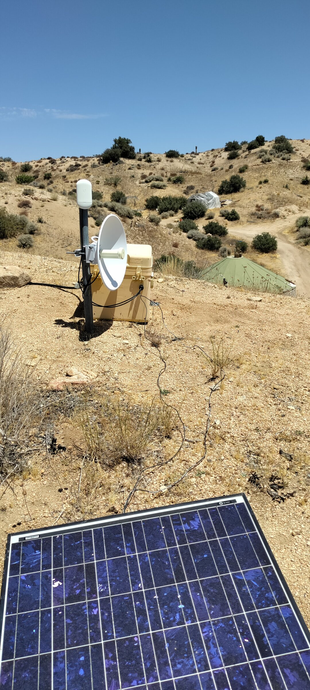
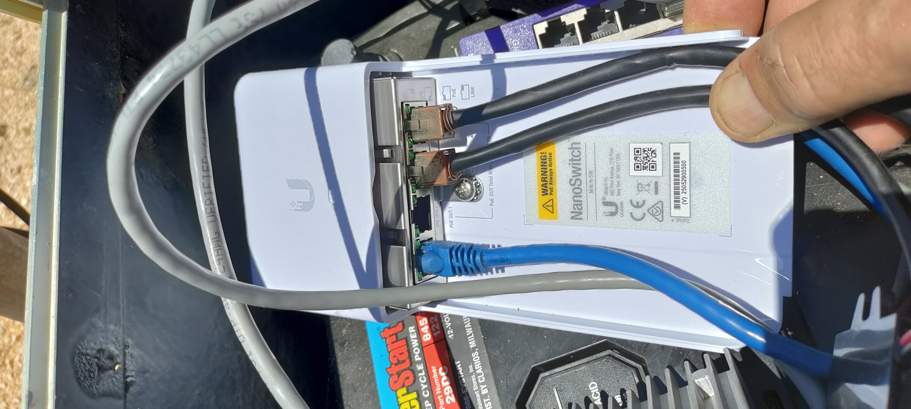
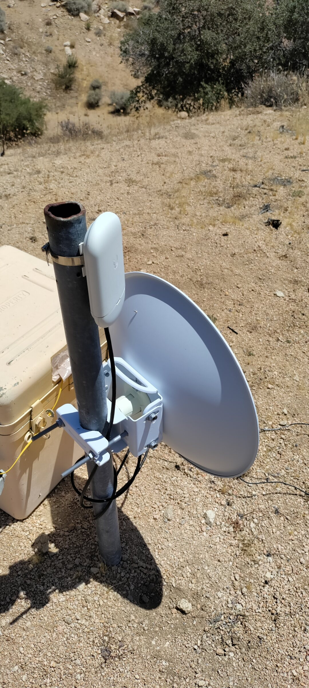

Field Report 004 · Sensors & Data
Hilltop
Internet relay
station.
Inspected and documented the hilltop Internet relay station that connects Mojave WiFi with the Bus area and the Boulder Gardens Command Center.

I inspected and documented the Hilltop Internet Relay Station, which links Mojave WiFi with the Bus area and my Fieldstation.
The relay is powered by a small stand-alone 24-volt solar and battery system. It contains several generations of networking and power equipment, including the original Mojave WiFi installation and equipment later added to extend Internet service to the Command Center.
A Ubiquiti NanoSwitch was added for the Command Center connection. This addition should remain fully reversible so the station can be returned to its inherited Mojave WiFi configuration if necessary.
Photographic Record
The work, seen in place
Selected photographs from the private FieldStation source record.







System Thread
Related Fieldstation records
Public synopsis derived from Boulder Gardens Fieldstation Workbook source record FR004. Detailed equipment records, calculations, unresolved questions, and corrections remain in the workbook.